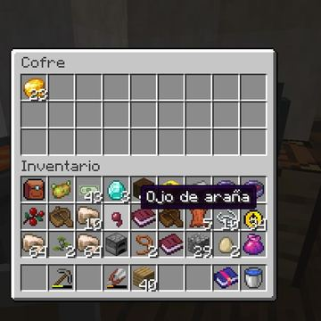
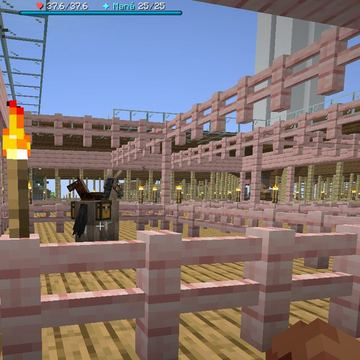
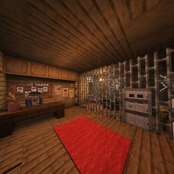

Boletín Oficial del Ayuntamiento del Reino · Se informa, no se alarma
EL HERALDO DEL REINO
Todo lo que pasa en el Reino, día a día
El Ayuntamiento deja por escrito cada jornada lo ocurrido en el Reino: quién se ha censado, quién se ha muerto y cuántas veces, qué se ha construido y con qué resultado, y aquellas anomalías que —sin revestir gravedad alguna— conviene documentar.
Último número · Nº 13 · 3 de septiembre de 2026EL DESMENTIDO LLEGÓ ONCE HORAS ANTES QUE LA DENUNCIAEl Ministro juró que él jamás robaría un Cacahuate a las once y media de la noche. El comunicado sobre las dos tarjetas no se leyó hasta la mañana siguiente. Esta Oficina hace constar que nadie le había preguntado.Leer el número →El calendario
septiembre de 2026 3 números

2Nº 12 3Nº 13 4 5 6 7 8 9 10 11 12 13 14 15 16 17 18 19 20 21 22 23 24 25 26 27 28 29 30agosto de 2026 10 números

25Nº 4
26Nº 5 27Nº 6 28Nº 7 29Nº 8 30Nº 9 31Nº 10Todos los números
EL DESMENTIDO LLEGÓ ONCE HORAS ANTES QUE LA DENUNCIA
El Ministro juró que él jamás robaría un Cacahuate a las once y media de la noche. El comunicado sobre las dos tarjetas no se leyó hasta la mañana siguiente. Esta Oficina hace constar que nadie le había preguntado.
Nº 12 · 2 de septiembreSE OFRECIERON DE POLICÍAS A LA UNA Y CINCUENTA Y DOS; A LAS CUATRO Y CINCUENTA Y TRES YA TENÍAN CASO
Cuatro vecinos pidieron anoche formar un cuerpo de investigación. Tres horas y un minuto después le vaciaban la casa a una de ellos: cuatro hornos, y un loro con nombre. El Reino se ha levantado con comisaría, con expediente y con la misma pregunta de hace siete días.
Nº 11 · 1 de septiembreSE PASÓ DOS HORAS SIN PODER ENTRAR AL REINO Y AMANECIÓ SIENDO SU PRIMERA CAUSA DE MUERTE
El único vecino dado de alta en toda la jornada, Webis2009 , estuvo desde las cuatro de la tarde peleándose con el censo porque su nombre ya lo tenía otro. Entró a las 18:32 . Dieciséis horas después, entre las 10:55 y las 10:58 , causó nueve defunciones en tres minutos , todas del mismo vecino y ninguna de ellas comentada por nadie. El Reino cerró la jornada un minuto más tarde.
Nº 10 · 31 de agostoCOBRÓ POR LEVANTAR LA CASA QUE OTROS DERRIBARON POR FEA, Y LE PUSIERON UN NUEVE SOBRE SESENTA
La Unión Pueblerina arrasó una vivienda entera por cáncer visual , descubrió que ninguno de sus miembros sabía levantar otra y acabó pagándole al Ministro Pan para que la hiciera él. El Ministerio lo ha contado por escrito, con la palabra «cientos», y ha anunciado que la próxima vez cobra el doble. Un vecino le puntuó el resultado con el mismo baremo de seis apartados con el que el Ministro se había puesto un cincuenta sobre cincuenta la noche anterior: le salió un nueve.
Nº 9 · 30 de agostoGANA EL CONCURSO DE VIVIENDAS EL QUE LO ORGANIZABA, CON UN CINCUENTA SOBRE CINCUENTA EN LO QUE PUNTUABA ÉL
Doce casas visitadas, once puntuadas y un ganador que se puso 10 en fachada, 10 en interior, 10 en utilidad, 10 en encaje y 10 en originalidad . El vecindario, que puntuaba el sexto apartado, le dio 2,3 : la segunda nota más baja de la noche y menos que el 3,6 que sacó un solar en ruinas . Y a la noche siguiente, cuarenta y un minutos después de cumplirse la única sanción de la historia del Reino, una casa entera había desaparecido con un cartel firmado en su sitio.
Nº 8 · 29 de agostoEL REINO YA TIENE PRESO DE VERDAD, Y EL AYUNTAMIENTO LE HA PUESTO HORARIO DE VISITAS
lLuqqa entró a las 17:50 en el Centro Municipal de Reconsideración por veinticuatro horas. A los diez minutos había seis vecinos delante de la reja haciendo fotografías, uno de ellos tituló la escena «aquí en el zoológico» , y esta corporación, que jamás ha desaprovechado una aglomeración, ha aprobado horario, tarifa y programa . Dentro conviven ahora un vecino y un pollo , y sólo uno de los dos tiene fecha de salida. Y en páginas interiores: este periódico rectifica su propia rectificación cuatro veces.
Nº 7 · 28 de agostoTRES VECINOS OYEN VOCES Y EL AYUNTAMIENTO ABRE UN GABINETE PARA EXAMINARLOS A ELLOS
A las 21:41 un vecino avisó de que oía susurros y gritos. El registro del subsuelo consigna una alteración de la percepción entre las 21:38 y las 21:43, y otra a las 16:37 del día siguiente. El Ayuntamiento ha estudiado las dos, ha concluido que no guardan relación alguna con lo que nadie oyera, y ha creado el Gabinete de Higiene Mental , cuyo primer informe se publica hoy en este mismo número. Se examina a los vecinos. El subsuelo no.
Nº 6 · 27 de agostoEL PRIMER PRESO DEL REINO ES UN POLLO, Y SU JUICIO SE SUSPENDIÓ POR UNA BRONCA ENTRE ABOGADOS
La cárcel se inauguró vacía el miércoles y el jueves ya tenía inquilino: un ave doméstica acusada de cacarear antes de hora. El proceso se vino abajo a la media hora, el acusado sigue dentro sin fecha y sus dos pollitos quedaron bajo la custodia del juez que había de juzgarle. La misma noche desaparecieron los hornos de dos casas, la policía dijo saber quién fue y se negó a decirlo, y el Emperador declaró la guerra a las cabras sin haber entrado en el Reino.
Nº 5 · 26 de agostoABRIÓ LA CÁRCEL A MEDIANOCHE Y A LAS TRES Y MEDIA YA HABÍA A QUIÉN METER
Fue la jornada más tranquila desde la apertura: las defunciones cayeron a la mitad y no hubo una sola pelea entre vecinos. Duró hasta las tres y media de la mañana, cuando a una vecina le desaparecieron seis animales del corral y el Reino descubrió que estrenaba cárcel y ladrón el mismo día.
Nº 4 · 25 de agostoLA ÚNICA DENUNCIA QUE ENTRÓ POR REGISTRO EN TODA LA JORNADA FUE POR UNA BURRA
Hubo ocho vecinos muertos a manos de otros vecinos, una revuelta con lava dentro de una casa ajena, ciento treinta y cinco defunciones y un ministro plantado en mitad de la plaza. Nada de eso llegó por escrito. Lo que sí llegó, firmado y con fotografía adjunta, fue una denuncia por el trato dado a un animal de tiro.
Nº 3 · 24 de agostoSE PASÓ HORA Y CUARTO ASUSTANDO AL VECINDARIO Y LUEGO LE ILUMINÓ LAS CASAS
Una figura sin identificar se dedicó a mirar por las puertas, tocar a los vecinos y no dejarles salir de casa. Cuando por fin habló, resultó que venía a ayudar: explicó lo del calor, repartió consejos y dejó una casa entera iluminada. El Ministerio ha desmentido tener nada que ver, sin que nadie se lo hubiera preguntado.
Nº 2 · 23 de agostoEL REINO REPELE UNA INVASIÓN Y NADIE EXPLICA DE DÓNDE SALIÓ
Veintiocho minutos de asalto, tres Héroes de la Villa y cuatro caídos en la defensa. La plaza tembló hasta el amanecer por un motivo que esta Oficina prefiere calificar de administrativo. Y reabre Correos, con veinticinco encargos y cuatro carteros que en el registro son el mismo señor.
Nº 1 · 22 de agostoEL REINO ABRE SUS PUERTAS Y CINCO HORAS DESPUÉS DEJA DE VERSE A SÍ MISMO
Veinte vecinos se dan de alta en el censo en una sola noche. Hubo ciento treinta y cinco defunciones, un culto fundado ante la Torre sin permiso de reunión y una plaga de conejos. El Ayuntamiento da la jornada por un éxito rotundo.